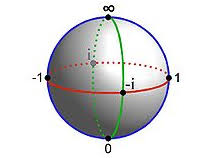
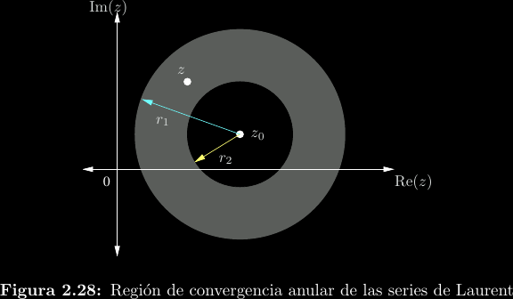
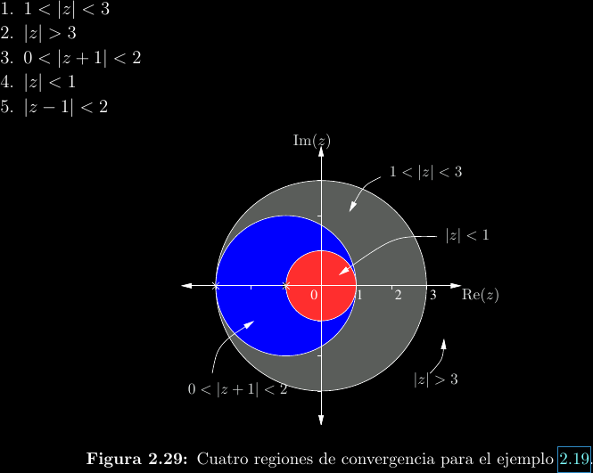

Series complejas
Anteriormente mencionamos que las funciones diferenciables son también analíticas, lo cual significa poder de expresar la función en términos de una serie de potencias convergente (síntesis). En variable real, escribiríamos algo como \[f(x) = \sum_{n = 0}^{\infty}{c_n (x - x_0)^n}\] Donde \(x_0\) es el centro de la serie en la línea real y \(c_n\) son los coeficientes de la serie, los cuales podrían determinarse con el teorema de Taylor o herramientas semejantes.
Por el principio de continuación analítica, el cual ya hemos mencionado antes, puede "extenderse" la serie de potencias real al caso complejo siempre que la función real correspondiente sea analítica: \[f(z) = \sum_{n = 0}^{\infty}{c_n (z - z_0)^n}\] Esto quiere decir que tales funciones como \(e^z\), \(\sin(z)\), \(\cos(z)\) tienen el mismo comportamiento y reglas en variable compleja que lo que se conoce para variable real. Por ejemplo, tales propiedades como \(e^{a + b} = e^a e^b\) y \(\sin^2(z) + \cos^2(z) = 1\) se siguen manteniendo.
Uno de los principales cambios en series complejas es que la idea de un radio de convergencia se generaliza a regiones de convergencia (ROC), aunque estas típicamente siguen siendo asociadas a un radio. Para series de esta forma (iniciando en \(n = 0\)), se puede encontrar el radio de convergencia utilizando el criterio de d'Alembert:
\[f(z) = \sum_{n=0}^{\infty}{c_n(z - z_0)^n} \implies R = \lim_{n\to\infty}{\left\vert\frac{c_n}{c_{n + 1}}\right\vert}\]
Posteriormente se mostrará que la serie converge en la ROC \(|z - z_0| < R\). Como ejemplo se muestra una serie y su ROC:
\[\frac{1}{1 - z} = \sum_{n=0}^{\infty}{z^n}; |z| < 1\]

Múltiples expansiones
La forma más primitiva de encontrar series para una función es la división de polinomios. Por ejemplo, para \(\frac{1}{z - a}\) donde \(a\) es alguna constante, se puede realizar esta división de dos maneras. La primera es:

Esta primera serie converge si \(|z| > |a|\). Podemos decir que la serie está "centrada en infinito", lo cual se visualiza fácilmente utilizando la esfera de Riemann, una extensión de los complejos que trata a \(\infty\) como un elemento más del conjunto.

La segunda serie, que ocurre si cambiamos el orden del denominador, es:

Esta otra serie converge si \(|z| < |a|\), con centro en el origen. A continuación se muestran las dos regiones de convergencia:

Esta "ruptura" en dos síntesis distintas para la misma función se debe a que en \(z = a\) encontramos un polo, un tipo de discontinuidad (queda una división entre cero) que estudiaremos más adelante. Nótese que, debido a la virtual equivalencia entre una función analítica y una función diferenciable, la razón de delimitar la serie en un polo es que la función deja de ser analítica en el mismo.
Series de Taylor
Es posible realizar un desarrollo de potencias general para funciones diferenciables. A esto le denominamos series de Taylor. El teorema de Taylor nos otorga directamente la sucesión de coeficientes. Para un desarrollo de \(f(z)\) alrededor de \(z_0\) se cumple que: \[c_n = \frac{f^{(n)}(z_0)}{n!}\] La región de convergencia será \(|z - z_0| < R\), donde el radio de convergencia \(R\) es el máximo permisible antes de llegar a un polo de la función.
Se muestran a continuación algunas series de Taylor comunes:

Series de Laurent
Son extensiones de las series de Taylor que pueden converger en anillos, no solo en interiores y exteriores de círculos, como se observa. Esto significa que pueden cubrir áreas delimitadas por polos, algo que las series de Taylor no pueden lograr.

Las series de Laurent toman una forma más general que cubre todos los enteros, en vez de iniciar en \(n = 0\): \[f(z) = \sum_{n = -\infty}^{\infty}{c_n (z - z_0)^n}\]
Esta suma puede separarse en una parte de términos de potencias negativas denominada parte principal y una parte de términos positivos (\(n = 0\) cuenta como "positivo") que se denomina parte de Taylor. Es la parte principal la que le confiere a la serie de Laurent su capacidad para "borrar" parte de la región de convergencia que es mandatoria para una serie de Taylor. Estudiemos el caso de expandir la siguiente función en distintas ROCs: \[f(z) = \frac{1}{(z + 1)(z + 3)}\]
